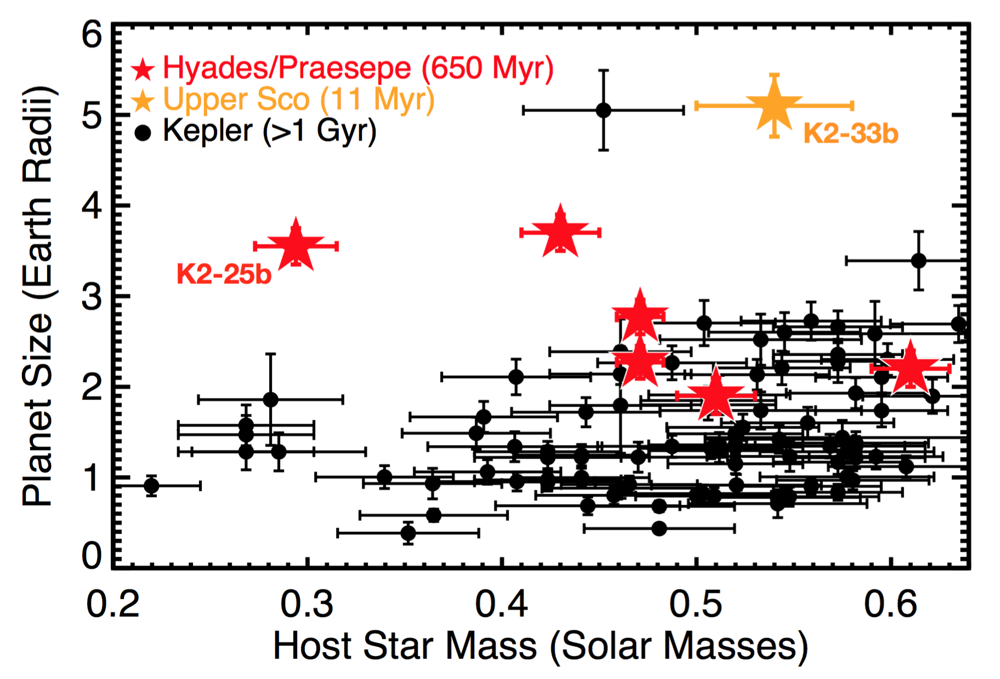
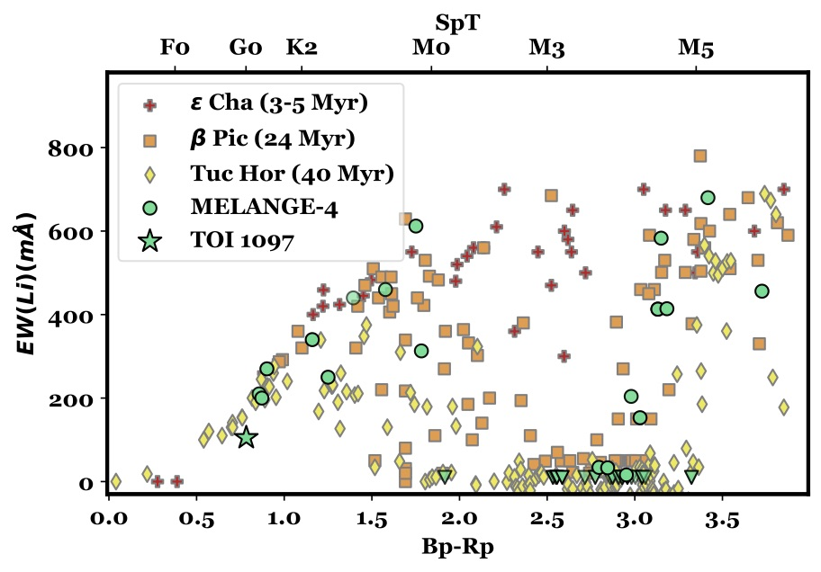
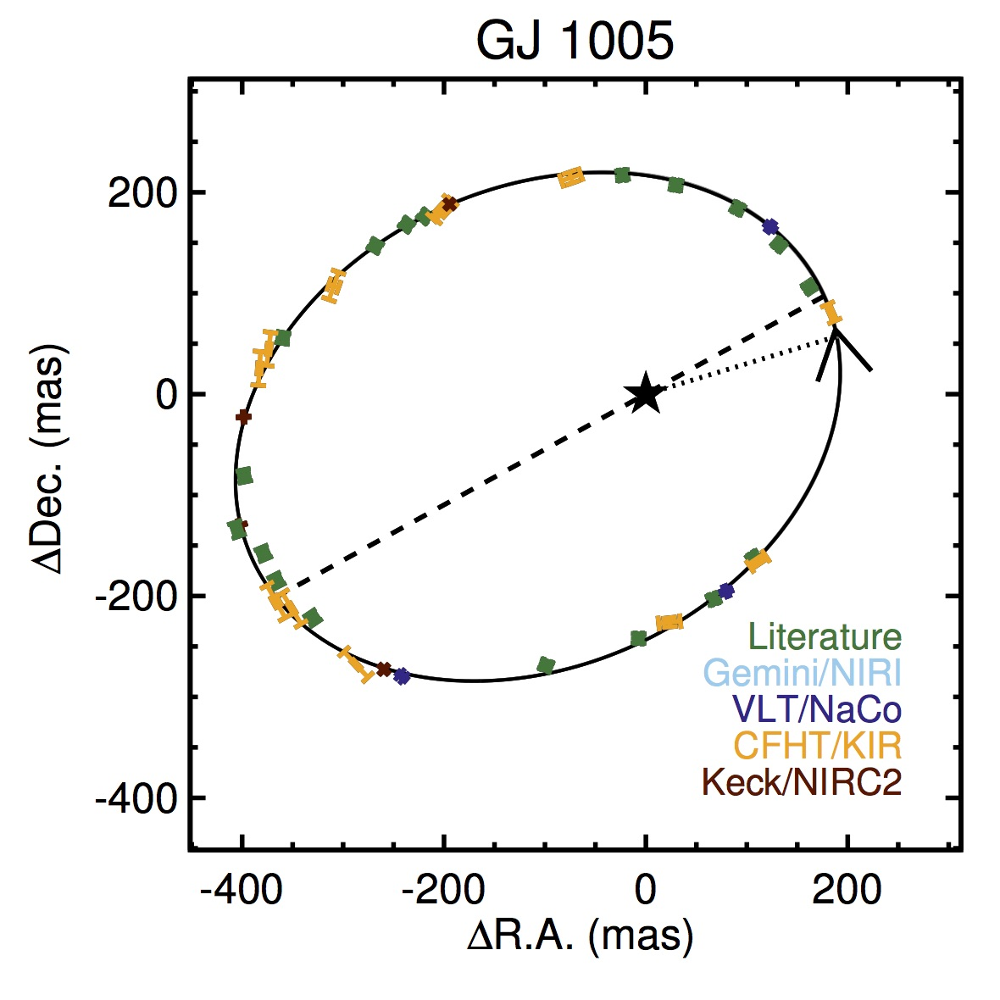

Link to all papers on ADS
Google Scholar
Planets and their host stars evolve with time and the first few hundred million years are thought to be the most formative. Assembly of the core of giant planets likely occurs in the first 10 million years, and the final formation of rocky terrestrial planets in the first 10-100 million years. Planets may evolve for several hundred million years after this due to the accretion of residual planetesimals, loss of their atmosphere from X-ray and UV emission from the star, and gravitational interactions with other planets or companion stars (if present).
Most planets discovered to date are much older than the timescales of interest. Kepler target stars, for example, are overwhelmingly more than a billion years old. Further, young stars are noisier, making it difficult to detect young planets through the transit or radial velocity methods. Direct imaging can detect young planets but is generally only sensitive to > Jovian-mass objects far from their host star. So we remain relatively ignorant about the critical period of planetary evolution (right).
The Zodiacal Exoplanets in Time (ZEIT) and TESS Hunt for Young and Maturing Exoplanets (THYME) surveys focus on filling this gap by identifying transiting planets in K2 and TESS observations of young clusters and OB associations. The photometric precision and continuous observing from these space surveys enable us to fit out much of the stellar variability, revealing planets as small as Earth. So far we have already identified more than 30 planets spanning ages from 10--700 Myr. These discoveries have already revealed that young planets are larger than their older counterparts (right) and helped place constraints on the exoplanet migration timescale.
Distribrution of known planets (grey contours) with systems known to be young as circles, color-coded by the estimated age.

Planet radii (in Earth radii) as a function of stellar host-star mass (in Solar masses). The red/orange stars are young planets from the ZEIT survey, while black points are older planets from the Kepler survey. The young planets are statistically much larger than their older counterparts, even accounting for survey bias.
A major problem limiting our search for young planets, as well as general searches for transiting and radial velocity planets is strongly correlated astrophysical noise. This noise cannot be mitigated with better precision data, and in most cases cannot directly modeled due to a poor understanding of the underlying astrophysics. Examples include stellar rotation and spots, flaring, and magnetic activity cycles.
We employ a range of techniques to mitigate or remove astrophysical noise. Our primary method is the `notch' filter, which takes king advantage of the fact that we know something about the transit shape (a 'U' or trapezoidal shape), although our methods can be generalized to any shape for which we have a model. This uses a transit model to build a small notch in the variability fit. Assuming a transit is present lets us use an extremely aggressive stellar variability fit algorithm without removing a real transit or allowing transits to bias our stellar variability fit.
In cases where the stellar signal is too strong or the planetary signal is too weak for individual notch triggers we can use a star-driven method (we call LOCOR). Here we fit stellar variability with linear combinations of other regions of the light curve. Essentially we are using the light curve to fit out itself. The danger is that, if the stellar and orbital signals work on similar timescales, the transit can be removed or the signal weakened. However, we can correct for this in our occurrence rate estimates noting that such instances should be extremely rare.
Top: example of the notch filter technique. This assumes a trapezoidal 'notch' is present in the data to avoid removing a real transit with an aggressive pipeline. Bottom: demonstration of LOCOR pipeline to fit stellar variability.

The lithium sequence of a newly identified group (MELANGE-4) near LCC. Lithium is burned in stars, so older associations have less lithium on the surface of their members. Thus, the region of M dwarfs without any lithium (the lithium depletion boundary) can tell us the age of a group. The depletion in MELANGE-4 confirms it is 25-30 Myr, similar to the Beta Pic moving group.
Most stars form in stellar nurseries, often at the same time as tens of thousands of other stars. Stars in such groups will have nearly identical ages, abundances, and motions. Except in cases where they are dense enough to stay bound (e.g., globular clusters), these groups eventually break apart and become indistinguishable from the field of stars. The intermediate phases are young groups of co-eval and co-moving stars including stellar clusters, young moving groups, and OB associations.
Such groups form an important bedrock of stellar and planetary astrophysics. Because all members have the same age, we can measure the ages of member stars far more precisely than we can in the field. Precise ages, in turn, help us test models of stellar and planetary evolution. We can also tune methods to measure the ages of singleton field stars (e.g., Gyrochronology).
Our team uses Gaia data to identify kinematic and spatial overdensities of stars suggestive of a co-moving group. We then confirm these collections of stars are truly co-eval using age-sensitive metrics, like stellar rotation, lithium levels, and the color-magnitude diagram.
Once confirmed, our group uses a similar set of tools to measure the basic properties of the new association. The most important property is the age, which relies on high-quality member selection and detailed measurements from space- and ground-based telescopes.

The relation between absolute K magnitude and stellar radius for M dwarfs (top), and the residual of the best-fit (bottom).

Orbit of the M dwarf GJ 1005AB. With an orbit like this, we determine the mass of the system and explore fundamental relations between M dwarf masses and other properties (temperature, luminosity, activity, and metallicity).
Cool, late-type dwarf stars (M dwarfs) are attractive targets for planet searches because their small size and low mass facilitates the discovery of smaller and less massive planets. They are also by far the common star in the Solar Neighborhood (about 70% are M dwarfs). A disproportionate number of Habitable-zone and Earth-like planets are around M dwarfs.
Despite their importance in both Galactic and exoplanet studies, their parameters are poorly understood compared to their Sun-like counterparts. Their cool atmospheres enable the formation of complex molecules that are hard to model and make traditional methods to estimate stellar parameters difficult.
We focus on estimating M dwarf parameters using 'touchstone' stars, for which we can estimate their parameters empirically. This includes stars with radii from long-baseline interferometry, masses from dynamical orbits or binaries, and luminosities from a parallax and the broad-band spectral-energy-distribution (SED).
With large samples of touchstone stars, we can then explore the relations for M dwarfs, including the fundamental mass-luminosity relation. This also lets us calibrate empirical relations between easily measured parameters (like absolute magnitude) and fundamental properties (like effective temperature and radius). Such relations can then be used to assign parameters to much larger samples of stars where direct measurements of their radii and masses are not possible.